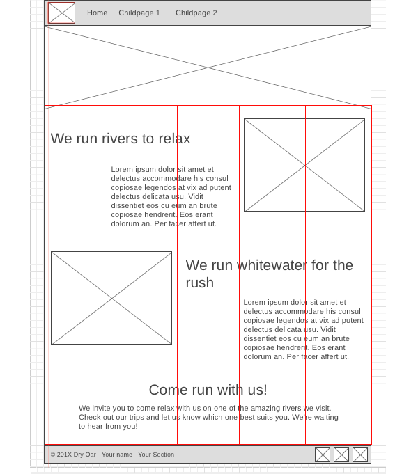
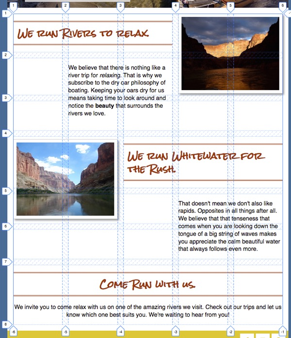

We have made a lot of improvements to our page over the last few
weeks. This week we finally take on the layout. After we finish the
layout of our page it should look very similar to the wireframe, and
will be close to complete.
The instructions below are expecting a certain structure in your
HTML to work. If you followed the instructions in the
Getting Started
activity you should have it. It should look similar to the
following:
<main>
<div class="banner-box">
<img src="river-wide.JPG" alt="wide shot of the salmon river">
</div>
<div class="home-grid">
<h2 class="home-headline-1">We run Rivers to relax.</h2>
<p class="home-paragraph-1">We believe...</p>
<div class="home-right-img">
<img src="river-evening.jpg" alt="peaceful evening shot of a river">
</div>
<h2 class="home-headline-2">We run Whitewater for the Rush.</h2>
<p class="home-paragraph-2">That doesn't mean...</p>
<div class="home-left-img">
<img src="river-narrow.jpg" alt="river flowing through a canyon">
</div>
<section class="home-paragraph-3">
<h2>Come Run with us.</h2>
<p>We invite you...</p>
</section>
</div>
</main>
Make any changes necessary to have yours match what is above. (HTML
only...your images and text can be different)
Banner width
First let's consider the banner. According to the wireframe it
should extend all the way across the width of the page. Depending
on which image you are using yours may or may not be doing that.
Let's set a width of 100% on that image. Find the
<div> that contains your banner image. You
should have added a class calling it something like
banner-box. We can use that class to apply our width.
You might have tried something like:
.banner-box {
width: 100%;
}
to set the banner width. If you did you will find that it didn't
work! Why not? Well...that would apply the width to the element
with the class of banner-box. Guess what? As a
<div> it already had a width of 100%! What we
need to do is apply the width to the image inside of
the element with the class of banner-box. Does that
make sense? We can do that by changing our selector slightly:
.banner-box img {
width: 100%;
}
Visualizing the Grid
Now let's tackle the main portion of the site. We will be using
the CSS Grid you learned last week to accomplish this. The first
step is to look at the
wireframe
and see if we can visualize how a grid (columns and rows) would
fit around the elements on the page. Open it up, you may even want
to print it out and draw some lines on it.
In case your powers of visualization are a bit rusty...you can
see my result below for the columns.
Wireframe with Gridlines

Notice how I used 5 equal columns...and each element can be
fit in one or more columns.
And here is another image showing columns, rows, and gaps.
Layout with Grid lines

After you have a good idea of what the grid needs to look like
(numbers and sizes of rows and columns), either by figuring it
out on your own or by reviewing the two images above, continue
on to the next step.
Defining the Grid
Let's try css grid to do this.
CSS Grid
(<- open this link and keep it handy) is good when we have
several elements that need to be placed into specific spots on a
page. Before you start you may want to go review the
portion on Grid
from the article you read last week.
Locate the <div> inside of
<main> that contains most of our content. You
should have given it a class earlier like
home-grid (give it that class now if you didn't
before). If you don't already have a rule in your CSS with that
selecter add one now. Add the following property:
display: grid;, to modify that section of your page
to turn it into a grid container. In my case that rule would look
like the following:
.home-grid {
display: grid;
}
Now all of the immediate children will become grid-items or
children.
Next we need to define our columns. Above you should have found
that this layout works best with 5 equally sized columns. To
define this in grid we use the
grid-template-columns property. It is a property of
the grid container, so we can add it to our
.home-grid rule set. We don't know exactly how wide
each column should be...only that they need to be equal. We can
use the fr unit to do this. 1fr = one equal
portion of a space.
(If you remember the repeat() method from the Grid
videos, you could shorten 1fr 1fr 1fr 1fr 1fr to
repeat(5, 1fr). But either will work.)
You should see an immediate change once you define your columns.
The browser will try to start placing items into cells. It will
do this even though we have not yet defined any rows!
Explicit vs Implicit Grids
Grids can be constructed either explicitly: you define
everything about the grid, column number and widths, row number
and heights, and where every item should be placed, or
implicitly: you let the browser make as many of the
decisions as possible. Most grids are a mix of both. All grids
need to have some columns defined, but after that the browsers
will implicitly create rows as needed.
If you review the 'Layout with grid lines' image above you will
see that the rows are not all the same height. You may have been
wondering how you are to know how big to make each row? I'll let
you in on a little secret: you don't have to know in many cases.
You can often let the browser figure it out!
My workflow when creating a new Grid layout is usually the
following:
Review my wireframe to begin visualizing the grid I need to
make.
Define columns...and then see how close I am to achieving my
desired layout!
Explicitly place items as needed
Explicitly create rows if needed
Adjust alignment as needed
Let the browser do as much of the work as you can is my advice!
Place the items
In our layout implicitly (automatically) created rows will be just
fine. But most of our items will have to be explicitly placed to
get them into the right spots. Let's place the first together.
Find the first headline. It should have a class of
home-headline-1, if it does not, add that class to
it. Make a rule in your css for that class. Use the
grid-column and grid-row properties to
assign this item to a portion of the grid. If you review this
layout image
again you will see that the headline is in row 1, and only needs
one row of space. It also starts in column 1, but needs 3 columns
of space to fit. To place it correctly in the grid you could use
the following:
Continue placing the rest of the items into the correct
rows/columns.
If your images are not resizing to fit in the box you have them
in make sure you have the following rule in your css:
img {
max-width: 100%;
}
This will make sure that none of your images can ever be larger
than the box they are in.
Grid Gap
Looking good! One thing is bugging me though. The headlines and
paragraphs are in some cases squished up against the images. If
you refer back to the
layout image
again you will notice some space between the columns and rows.
This is called a gap and can be added with the
grid-gap property. This is a property that gets
applied to the grid container. So add a grid gap of
1em to your grid.
Navigation: Check your header HTML
We've done a lot of work on our site over the last few weeks and
it's looking pretty close to that wireframe now. The next portion
that needs our attention is the header. I have to admit I'll be
really happy when we get that fixed up!
The code that I am basing this activity on looks like this: (you
may want to adjust yours if it is not similar)
Let's start with getting the logo and the list of links to line up
in a row first. There are several ways we could do this...but
since we are most familiar with Grid...we'll use that. This is
really just a simple grid with one row and two columns! The only
tricky part is identifying which element will be the Grid
container and which are the grid items.
We want to move the nav and
logo-box elements. Their parent is the
<header> element. That is where we will start.
Create a rule targeting the header in your CSS if you
don't already have one. Add the properties to turn on grid and
define some columns.
How big should the columns be this time? We have a small issue.
This time the columns will not be the same size. We know how big
the column with the logo needs to be (the size of the
logo...around 110px), but we don't know the size for the
navigation! We really just want it to be whatever is left. CSS
Grid has an option to indicate that: auto.
Here is an example of how your header rule might
look:
Just like that your logo and links should have moved onto the same
row.
Header step 8
Navigation link layout
Let's make our links flow across the page horizontally next. It's
important to remind ourselves why they currently look the way they
do...list items are block elements. So one way to make them flow
horizontally would be to change them to inline-block elements
instead...but we also saw above that Grid can be used to make
columns act as rows as well...and we also gain some nifty
alignment tools. Let's use that to layout our navigation. Again
remember that for grid we need to identify the items we want to
move around (in this case the <li>), then find
their parent (in this case the <ul>) The parent
is where we will put our display:grid; Write a CSS
rule using a selector to only affect the list
that is inside of a nav element and add that now.
We learned about several new ways to
select
elements with CSS previously in Khan Academy. One of them allows
us to combine multiple selectors together. For step 1 above we
could use a simple ul as our selector, but that would
change all lists on the page, and we may not want that. It would
be better to get only the lists that are inside
of a nav. We can do that by using "
nav ul" as our selector instead of just
ul. Many of the steps of this activity will require
similar selectors.
We also need to define our columns. The easiest way to do this
would be to count the number of items in our list, and create that
many 1fr sized columns. This would certainly work, but
it is a bit rigid. If someone views our page on a smaller screen
the links might start looking squished. What would be nicer is to
have the browser define
as many columns as will fit in the current width. There
is actually a way to do this! Take a look at the example below
nav ul {
list-style: none; /* removes the bullets! */
display: grid;
grid-template-columns: repeat(auto-fit, minmax(6em, 1fr));
}
Let's break that down. It uses the repeat method, but
instead of giving a number of columns like in the past we use the
keyword auto-fit. This tells the browser to create as
many columns as it can fit in the space available. Then instead of
giving a specific size for each column, we used the
minmax method. This tells the browser to create columns
that are 1fr big,
but no column can be smaller than 6em.
So using a bit of math to illustrate: If we have 4 links and the
browser window is currently 60em (about 960px):
60em / 4 = 15em this is way bigger than
6em so we would get four equally sized columns (1fr) of
15em. If the browser window size were only
20em (around 320px) then 20em / 4 = 5em.
This is smaller than our minimum of 6em so it can't fit
all four columns. It will instead create 3 equal columns on the
first row, and one more on a second row.
Why 6em for the minimum you may be asking? Well it was
based on the length of my longest link (Rates/Dates). Any smaller
than that and the words got squished. Check out the length of your
longest links and adjust that value up or down as necessary.
Header step 9
Finishing up the navigation
The links are moving in the right direction now...but the
alignment isn't quite right, and the row is a bit bigger than we
want it to be. The row is easy to fix. It's actually caused by the
unordered list we used for our links. Lists (and many other
elements) have some default styling that come with them. In this
case there is some margin automatically added to the top and
bottom of the list that is causing us problems. Let's turn it off
by adding margin: 0 to our nav ul rule.
One final issue...the links are aligned at the top of the row.
They would look better in the middle (or bottom). Vertical
alignment for Grid items is controlled with the
align-items property. We can add
align-items: center; to our Grid container (in this
case would be the header rule) to fix this issue.
If you are having issues getting your header and navigation to
turn out right. Click below to see my css code.
Our page is looking great! Only a couple of last tasks left.
First is to address a usability issue. You should never make a
user guess about what elements are links and what aren't. We
should give them plenty of visual hints.
One thing we can take advantage of is
pseudo-classes. Click on that link and look at the examples there...go
on...I'll wait.
Pseudo classes let us target specific states of elements, such
as link. Links have 4 states: link (normal, nothing has
happened), visited (link has been clicked on), active (link is
currently being clicked), and hover (mouse is on link, but not
clicking)
The way we would change a link on hover is to add a rule like
this: a:hover { color: green; }. This would change
the color of all links to green on hover.
Let's set up some hover events to let our visitors know without a
doubt that our navbar is indeed a navbar with clickable things. My
example is going to stay simple, but you should refer back to your
site plan to see how you had planned to style your links.
For this example we are going to simply add an underline to the
link on hover. Add another rule to your CSS that looks like
nav a:hover{ }. This will only be active when the mouse
is on the links in our navbar. Change something about your link in
that rule.
There are a couple of common things that can happen when you
mouse over a link. You could do something very simple and just
add (or remove) an underline on hover (text-decoration: none).
You could also change the color of the link text, or change the
color of link and background. Refer back to your site plan or
try a few different effects, just remember the purpose: to make
sure the visitor knows what are links and what aren't.
Notice!
Most of the time CSS doesn't care much about spaces. You can
have them or not. Sometimes it does care though and
pseudo-classes are one of them. nav a:hover will
work just fine... nav a: hover will not. Make sure
to not add spaces around the : on your
pseudo-selector.
Footer
The next thing to do now is to finish the footer. According to the
wireframe the copyright should be on the left, the social media
icons on the right, the whole footer should be 55px high, and
there should be space around the icons. This is similar to what we
have done before. You should be able to figure it out.
Review the tips on last week's positioning activity if you get
stuck. (Hint: there are several ways to do this, but since we have
spent the most time with CSS Grid I would recommend using that to
get things into the right locations. Then use
padding, margin, or width on the different elements in
the footer as needed to finish it off.)
Enhancements
At this point your site is mostly done. There is much that could
be done to dress it up a bit though. From the list below pick two
items and follow the instructions to enhance your page.
Nearly there. Congratulations on making it this far! Your page
should be looking great in a the browser on your laptop. What does
it look like on a smaller screen like a mobile phone though?
Reduce the width of your browser window to see. The page is still
readable...which is good, but it doesn't look great.
Responsive design is a process that most web designers
apply to their sites to make them look great on a wide variety of
screen sizes. One of the key parts to a responsive design is a
@media query. These let us change our CSS based on the
width of the browser window and other things as well.
For example we can make our page responsive by adding a simple
media query to it. Add the following to the
bottom of your CSS:
@media screen and (max-width: 550px) {
/* beginning of media query */
.home-grid {
display: block;
}
/* end of media query */
}
This could be read: "If the max width of the screen gets smaller
than 550px, then use this CSS instead of what you may have seen
above". Notice that all I'm changing is turning off grid! After
adding this, check your page again at wide and narrow widths.
If you are not happy with the navigation at small widths you could
modify the rule in your media query to change it's behavior.
.home-grid, nav ul {
display: block;
}
If you did the call to action enhancement above then you will also
want to add the .banner-box selector to the media query
rule as well:
.home-grid, nav ul, .banner-box {
display: block;
}
Validate and submit
Validate your
html
and
CSS, fix any errors, then submit the URL to your site in ILearn.
Remember that the URL should look like:
http://projectname.glitch.com
Grading
This activity will be graded using the following rubric:
Positioning of elements looks like that in the wireframe (6 pts)
Two of the enhancements from the list above have been added (4
pts)
Navigation links are interactive (change on hover) (5 pt)
The HTML and CSS is well formed and without errors (valid) and the
page is visually appealing. (5 pts)